Text Adventure
Text Adventure 모드의 컨셉은 명확합니다. > (caret) 기호를 사용하여 캐릭터가 수행할 동작을 가리킬 수 있습니다. 그 후 AI는 그 행동을 분석하고 알맞는 내러티브를 응답으로 만들어냅니다. 이 > 행동은 그것 자체만으로는 이야기의 일부를 형성하지는 않지만 AI에게 내러티브의 방향을 안내하는 단서와 같은 역할을 합니다.
스토리 패널에서는 > 기호가 숨겨져 있다는 사실을 기억하세요. Context를 확인할 때만 보입니다.
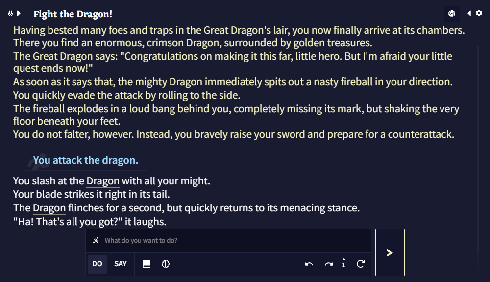
Getting Started
Text Adventure 모드를 시작하기 위해서는 Text Adventure 프롬프트가 준비되어 있어야 합니다. 새 이야기를 만들 때, 이미 만들어진 이야기를 선택할 수도 있고, 스스로 이야기를 만들어내도 됩니다.
NovelAI는 완전하게 빈 프롬프트로 Text Adventure를 시작할 수는 있습니다만, AI는 작업할 수 있는 더 많은 재료가 주어졌을 때 더욱 일관성있게 글을 쓸 것입니다.
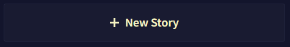
이미 만들어진 프롬프트를 선택하거나 빈 프롬프트로 시작하기 위해, 화면 왼쪽 모서리에 있는 New Story 버튼을 클릭하십시오.
Starting With a Blank Prompt
새 이야기를 만든 후, Text Adventure 버튼을 클릭하십시오. 이걸로 끝입니다! 다시 말하지만, 더 길고 적절하게 작성된 프롬프트에서 시작하는 이야기에 비해 완전하게 빈 프롬프트로 이야기를 시작하는 것은 상대적으로 일관성이 없을 수 있습니다.
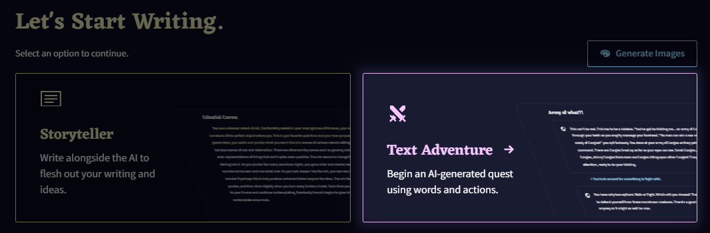
Selecting A Pre-made Prompt
화면 우측 하단의 View All Scenarios를 클릭하여 시나리오 뷰어를 확대하십시오. 그리고 Text Adventure 태그가 있는 프롬프트를 찾고 클릭하십시오. 검색바에서 text를 입력하면 쉽게 찾을 수 있습니다. 프롬프트를 고른 후에는 Start를 클릭하거나 모든 필요한 플레이스 홀더를 채우십시오.

Goose tip: 이미 만들어진 프롬프트의 일부에는 미리 플레이스 홀더가 채워져 있어요.
The Text Adventure Module
Text Adventure 스타일로 글을 작성하는 AI를 돕기위해 특별히 만들어진 AI 모듈이 있습니다. Text Adventure 모드로 이야기를 시작하지 않아을 때, 이 모듈을 선택하면 Text Adventure UI가 활성화됩니다.
이 모듈을 선택하기 위해서 해야할 것은 모듈 선택 드롭다운을 클릭하고 화면 왼쪽(옵션 사이드바) Text Adventure 클릭하는 것 뿐입니다.
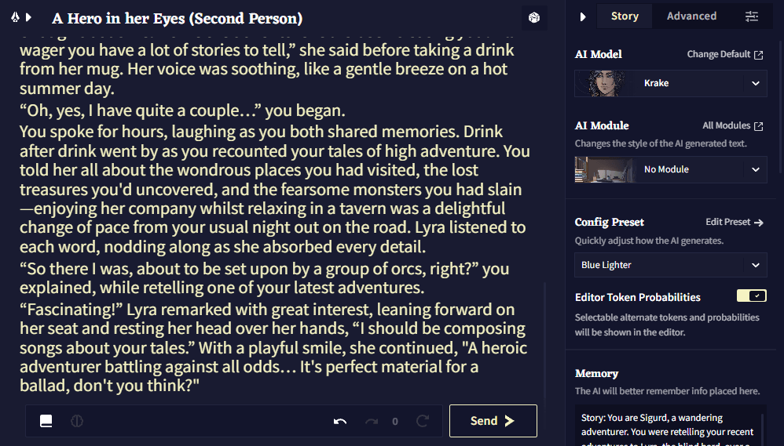
The Two Input Modes
Text Adventure 모드는 보통의 Storyteller Editor와는 다른 입력 방식을 갖습니다.
Text Adventure 모드에서는 명령어 형식의 입력을 받는데, 적절할 때 자동으로 Text Adventure 스타일에 맞는 서식이나 대문자, 구두점의 수정이 발생합니다.
actions와 dialogue라는 두가지 자동 서식 모드가 있습니다.
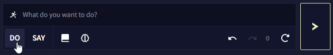
Do: 이 입력 모드에서는 사용자의 입력 앞에 > You를 추가합니다. 이것은 당신의 캐릭터가 하려는 행동을 서술하기 때문에 텍스트 어드벤쳐의 빵과 버터입니다.
Example: charge the dragon
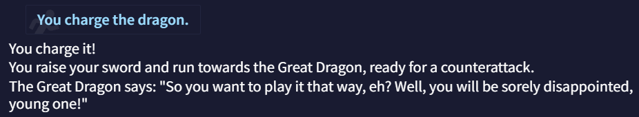
Say: 이 입력 모드는 문장 부호에 따라 사용자의 입력을 수정합니다.
온점이 있거나 다른 구두점이 없는 경우, 사용자 입력에 > You say가 앞에 덧붙여집니다.
Example: you've had enough
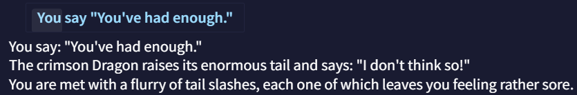
물음표로 입력이 끝난다면, 사용자 입력에 > You ask가 앞에 덧붙여집니다.
Example: you've had enough?
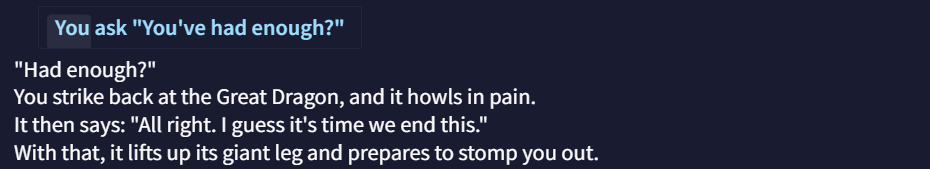
느낌표로 입력이 끝난다면, 사용자 입력에 > You yell이 앞에 덧붙여집니다.
Example: you've had enough!
Goose tip: 입력 박스를 사용하는 것외에도 편집기에서 텍스트를 직접 클릭하고 변경하여 자유롭게 이야기의 모든 부분을 자유롭게 편집할 수 있어요.
여러분의 행동을, 여러분의 캐릭터의 행동이 아닌 다른 걸로 바꾸는 것도 포함됩니다.
Advanced Inputs
Special Actions
do 모드에서 입력 중 일부는 특별한 기능을 갖고 있습니다.
- 단순히
l을 누르면You look around.가 됩니다. - 단순히
i를 누르면You check your inventory.가 됩니다. - 단순히
x something을 누르면 그것을설명합니다: 예를 들어,x book은You examine the book이 됩니다. - 단순히
n,w,s,e,nw,ne,sw,se,u,d를 입력하면 캐릭터가 해당 방향으로 이동할 것입니다: 예를 들어,n은you go north가 되고,sw는you go southwest가,u는you go up, 그리고d는you go down이 됩니다. - 단순히
z를 입력하면You wait.가 됩니다.
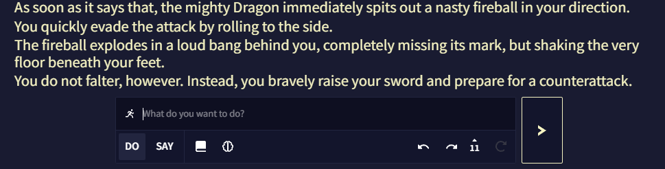
Wildcards
와일드카드는 위의 것들과 비슷한 특별한 입력이지만 약간 다르게 작동합니다.
Wildcards는 입력의 일부를 AI에게 맡깁니다.
와일드카드는 각각 약간 다른 방식이긴 하지만, do와 say 모드에서도 작동합니다.
-
*이나,로 입력을 마치면 AI는 그 행동의 후속 결과와 함께 여러분의 행동을 계속할 것입니다. 이 경우,*는 삭제되지만,는 유지됩니다.예를 들어,
grab the dragon's tail*를 입력하면 최종 행동은You grab the dragon's tail and spin it around.가 될 수 있습니다. -
do 모드에서
!만 입력한다면 랜덤 행동을 하고, say 모드에서는 어떤 것을 외칩니다. -
do 모드에서
?만 입력한다면 어떤 것에 대한 궁금증을 표현하고, say 모드에서는 어떤 것에 대해 물어봅니다.
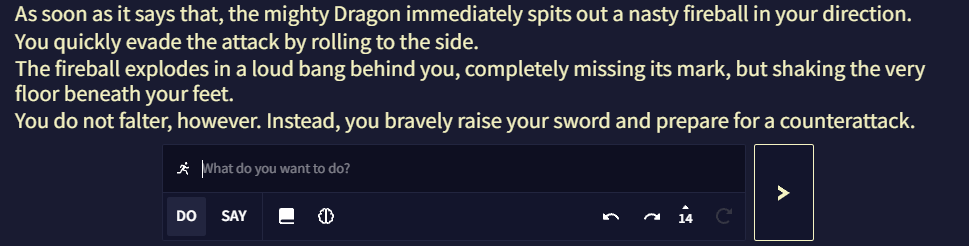
Shortcuts
바로가기는 현재 선택된 Input Mode에서 일반적으로 할 수 없는 것을 쉽게 할 수 있게 해줍니다.
"로 시작하면 여러분은 뭔가를말하게됩니다. 심지어 do 모드에서도 말입니다.>로 시작하면 여러분은 뭔가를하게됩니다. 심지어 say 모드에서도 말입니다.!로 시작하는 것은 약간 더 특별합니다. 이것은 input mode에서 적용받는 어떠한 수정 없이, 여러분이 입력한 대로 그대로 정확하게 전달이 됩니다. 입력 시작 부분에 숨겨진>를 제외하고는 말입니다. 그 결과, 주인공이 지시받지 않은 행동이나 명령이 발생합니다. 구버전의 NovelAI에서는 story mode 입력으로서 구분되었습니다.
Example: !The dragon suddenly has a heart attack.
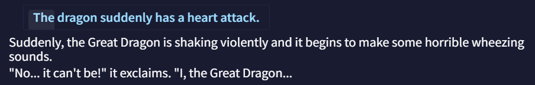
Goose tip:
!바로가기를 사용할 때는 적절한 대소문자와 구두점을 사용했는지 확인하세요. AI가 Text Adventure 입력에 일반적으로 수행하는 어떠한 교정도 수행하지 않으니까요.
What exactly does > do in the context?
기본적으로 AI는 > 동작을 캐릭터의 행동이 아닌 플레이어의 행동으로 인식합니다. 내러티브에서 실제로 일어나고 있는 일이 아닌, 캐릭터가 하려는 행동만 설명할 뿐입니다. 그렇기 때문에 AI는 어떤 식으로든 그 행동을 해석해야 하는 이유이자, 때떄로 행동을 단순히 단어로 설명하지 않는 이유입니다.
Goose tip: 만일 AI가
>동작을 더 정확하게 따르게 하고 싶다면 더 자세하게 적어보세요. AI에게 해석의 여지를 더 주고 싶다면 세부적인 사항을 적지마세요.